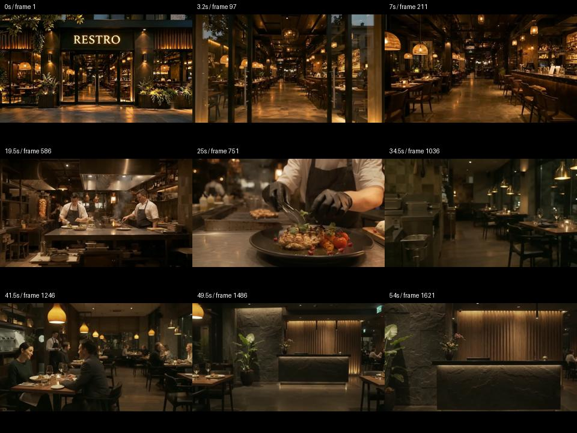
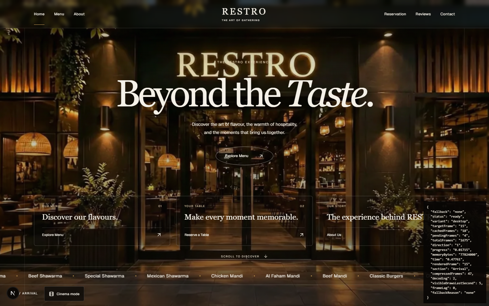

25 November 2026 · Verified production preview: localhost:3200
RESTRO cinematic continuity
Root cause and correction
The source already had a Canvas renderer. At task start port 3200 served Canvas markup but returned HTTP404 for the frame manifest; port 3100 served the older video build and also lacked the manifest. Port 3201 could load the frames. A missing manifest activated permanent fallback and the previous fallback logic switched among seven representative scene images. This explains a concrete route to the reported slideshow; the user's exact prior browser preference/URL was not inspected.
All three processes were identified by their repository-specific Next start command lines, stopped, and replaced with the current production preview at port 3200. No asset regeneration was needed. The exact-only drawing path also held unnecessarily during short cache misses, lacked a decoder alternative and did not communicate fallback reasons. These paths are now corrected. There is no section-based background-image switching; the initial poster and frozen Canvas are the only static surfaces.
Existing frame inventory
| Sequence | Frames | Dimensions | FPS | Size | Average |
|---|
| desktop | 1,675 | 1280 × 720 | 30 | 69,301,470 bytes / 69.30 MB | 41.37 KB |
|---|
| mobile | 1,340 | 960 × 540 | 24 | 33,877,798 bytes / 33.88 MB | 25.28 KB |
|---|
Combined sequence storage: 103,179,268 bytes / 103.18 MB. Existing libwebp desktop q80/mobile q75, compression level 6, lossy, 16:9 frames and directory names unchanged. Full picture duration 55.833333 seconds. No frames were regenerated or relocated.
Continuous section mapping
Reviewed actual sequence frames at all editorial anchors. The table lists shared interpolation endpoints, not screenshot replacements or detected hard cuts. At 25s, the menu passage reaches preparation/plating (desktop 751, mobile 601). Actual section positions are measured; tall mobile sections receive their own scene ranges rather than stretching the whole film uniformly.
| Content / observed footage | Time range | Desktop index | Mobile index |
|---|
| Hero: exterior / entrance | 0 → 3.2s | 1 → 97 | 1 → 77 |
|---|
| Marquee: entrance walkway | 3.2 → 7s | 97 → 211 | 77 → 169 |
|---|
| Promotions: dining room | 7 → 19.5s | 211 → 586 | 169 → 469 |
|---|
| Menu: kitchen / preparation | 19.5 → 34.5s | 586 → 1036 | 469 → 829 |
|---|
| Reservation: dining tables | 34.5 → 41.5s | 1036 → 1246 | 829 → 997 |
|---|
| Reviews: guests dining | 41.5 → 49.5s | 1246 → 1486 | 997 → 1189 |
|---|
| Contact: reception / closing | 49.5 → 54s | 1486 → 1621 | 1189 → 1297 |
|---|
| Footer: final reception frames | 54 → 55.8333s | 1621 → 1675 | 1297 → 1340 |
|---|

Architecture, loading and memory
- One fixed, pointer-inert, aria-hidden Canvas below the contrast overlay, architectural grid and existing content. Native touch/wheel scroll remains untouched. Scroll and decode events schedule one centralized rAF controller; no per-frame React state or idle animation loop.
- The latest target is authoritative. Exact frames render first; a nearby decoded image within 12 frames may bridge a miss only if it lies chronologically between the previous display and target. Obsolete results cannot draw directly. The last complete Canvas stays visible during larger misses. Stopping settles at the exact available target.
- Desktop: 4 requests, 36-frame directional compressed lookahead plus 6 behind; mobile: 3 requests, 20 ahead plus 6 behind. Request deduplication, latest-direction priority, stale aborts and two attempts for real failures. Compressed caches cap at 64 desktop / 40 mobile images; no full-sequence preload.
- Decoded caches cap at 18 desktop frames (63.3 MiB RGBA) and 12 mobile (23.7 MiB). At most two decodes add about 7.0/4.0 MiB. Source-aware Canvas buffers and compressed blobs add overhead. Reported runtime estimates include cached/in-flight decoded pixels and Canvas, while actual browser/GPU copies may cost more. Evictions close bitmaps; inactive routes dispose caches and fetches.
- createImageBitmap is preferred with a Blob-backed HTMLImageElement alternative. Repeated failures with no usable local frames activate a stable static fallback with a reason and retry control. Manifest failures retry once. Saved explicit preferences, reduced motion and Save-Data remain respected; capable mobile browsers animate by default.
- Variant changes preserve the current timestamp, release the previous cache, map through the new FPS and hold the existing Canvas until replacement is ready. A continuity anchor survives repeated ResizeObserver measurements. Endpoints remain frame 1 and the actual final frame.
- Cover drawing never stretches source pixels. Backing buffers cap DPR and source width. A gradual kitchen focal envelope replaces abrupt mobile section-boundary shifts. Keyboard/dialog editing holds camera position; hidden tabs pause requests and rendering. Geometry is cached and refreshed for layout/fonts/viewport/route events.
Measured performance
- desktop: 72 distinct displayed frames in the six-second slow-scroll phase; 99.45% of 361 sampled ticks matched target; 0 ticks exceeded 25ms. Maximum sampled index lag 47 includes the initial jump into the phase. Entire demonstration: 564 draws, p95 synchronous draw call 0.10ms, 1 long tasks (max 104ms). Initial resource transfer 3,853,264 bytes; traversal resource transfer 95,358,782 bytes. Request count 4102 includes cancellations/revisits.
- mobile: 63 distinct displayed frames in the six-second slow-scroll phase; 99.45% of 361 sampled ticks matched target; 0 ticks exceeded 25ms. Maximum sampled index lag 45 includes the initial jump into the phase. Entire demonstration: 513 draws, p95 synchronous draw call 0.10ms, 1 long tasks (max 122ms). Initial resource transfer 1,647,354 bytes; traversal resource transfer 33,222,310 bytes. Request count 3108 includes cancellations/revisits.
Transfer counts use Resource Timing and exclude initial HTML and aborted requests. The full-sequence byte size is storage, not initial download. Slow-scroll index sampling is distinct from compositor FPS. Draw-call timings are synchronous CPU submissions, not GPU completion. The recordings include scripted slow and fast movement, direction changes, freezes, section interiors and crossings, plus native wheel/touch smoke tests. No guaranteed 60 FPS claim is made.
Responsive, failure and regression results
All nine widths passed: 320, 360, 375, 390, 430, 768, 1024, 1440, 1920px. Tested the hero, menu, reservation, reviews, contact and footer with actual Canvas pixels and no document overflow. The debug panel was verified in development against changing image pixels and displayed indexes; production contains no debug panel.
- firefox: {"frames": [1, 523, 892, 1340, 789, 1], "errors": [], "passed": true}
- webkit: {"frames": [1, 523, 893, 1340, 789, 1], "errors": [], "passed": true}
- htmlImageAlternative: Rendered real WebP with createImageBitmap disabled
- anchorReload: Reservation hash and reload preserve chronological frame
- keyboard: Focused form held its frame during emulated keyboard viewport shrink; resumed after blur
- formsAndDialogs: Reservation/enquiry validation, analog clock and Add Review dialog preserved
- mobileNavigation: Menu anchor and Back to Top update the actual rendered frame
- singleMissing: One missing frame used nearby chronological image; next position recovered without static fallback
- repeatedFailures: Repeated 503 responses expose reason and retry restores animation
- transfer: {"coldResourceBytes": 3853222, "warmReloadResourceBytes": 29335, "note": "Resource Timing response bytes, excludes HTML and aborted requests"}
- blurComparison: {"results": [{"blur": "6px", "animationTickP95Ms": 16.899999999999636, "delayedTicks": 0}, {"blur": "2px", "animationTickP95Ms": 16.900000000001455, "delayedTicks": 1}, {"blur": "0px", "animationTickP95Ms": 16.899999999999636, "delayedTicks": 0}], "note": "Sequential local rAF comparison; affected by warm cache, not an isolated GPU cost measurement"}
- visibility: {"hidden": false, "pending": "0"}
- simulatedVisibility: {"method": "Simulated document.hidden and visibilitychange; actual headless background tab remained visible in separate test", "hiddenFrameHeld": true, "hiddenNewRequests": 0, "resumed": true}
All existing project checks passed: cinematic mapping, frame loader, menu catalog (nine routes/48 products), offers, reservation/time picker, reviews/storage, enquiry/contact, mascot timeline and responsive arrows. The cart was already intentionally absent before this task; it was not recreated. TypeScript, zero-warning ESLint and the production build (16 expected routes/paths) passed. Existing UI components and data are unchanged.
Recordings
Development diagnostics

Traversal metrics · Extended checks · Pixel/debug evidence
Limitations and next steps
All mobile tests are desktop emulation, not physical Android/iOS. Playwright WebKit is not a physical Safari device. Local browser tests do not establish production-host caching, low-memory device behavior, sustained GPU usage or WAN smoothness. Simulated delay and missing-image tests verify stability; low bandwidth or rapid jumps can still hold the previous picture. The header blur comparison is sequential local rAF timing, affected by cache/CPU scheduling, and does not isolate compositor/GPU cost. Headless visibility testing is reported with its actual hidden-state result. Independent image sequences remain larger than inter-frame compressed video. No backend, authentication, ordering, payment, new runtime package, deployment or source-video change was made.